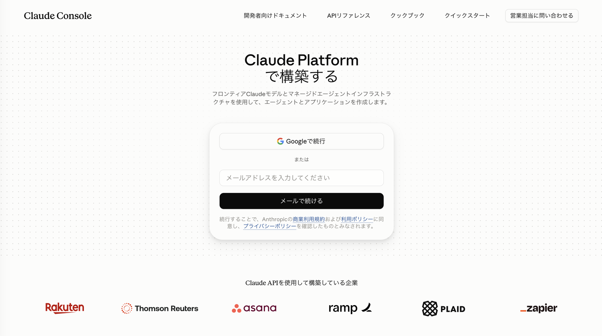
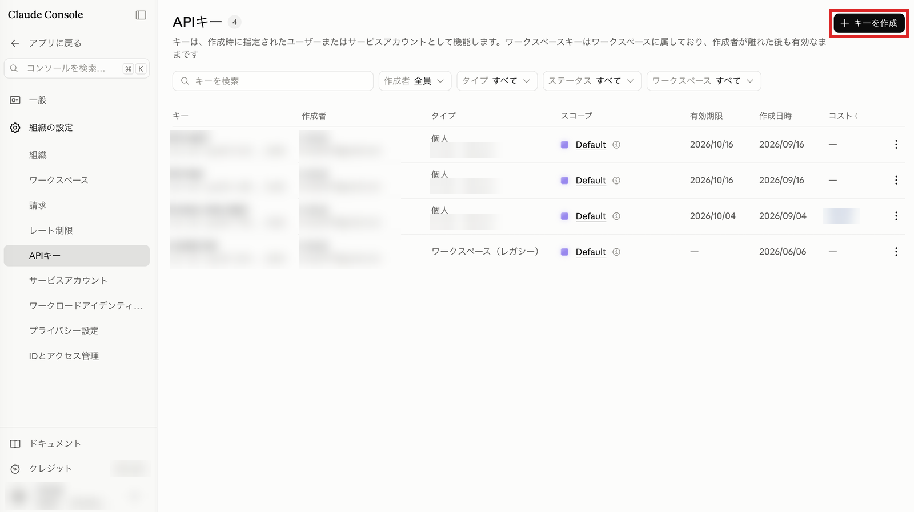
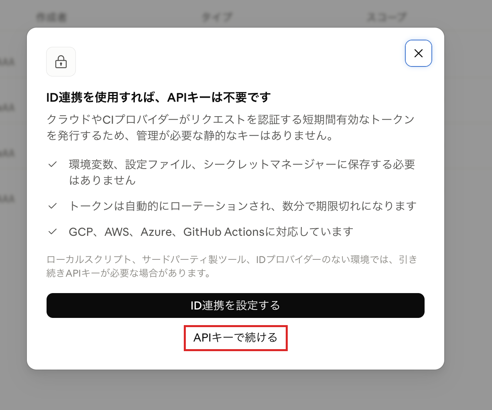
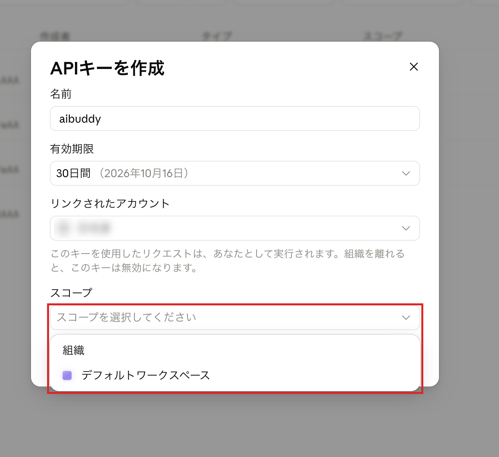
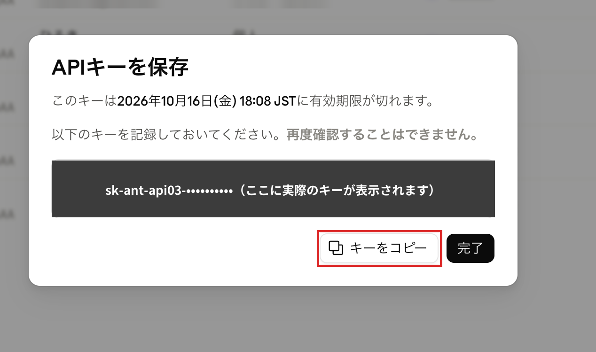
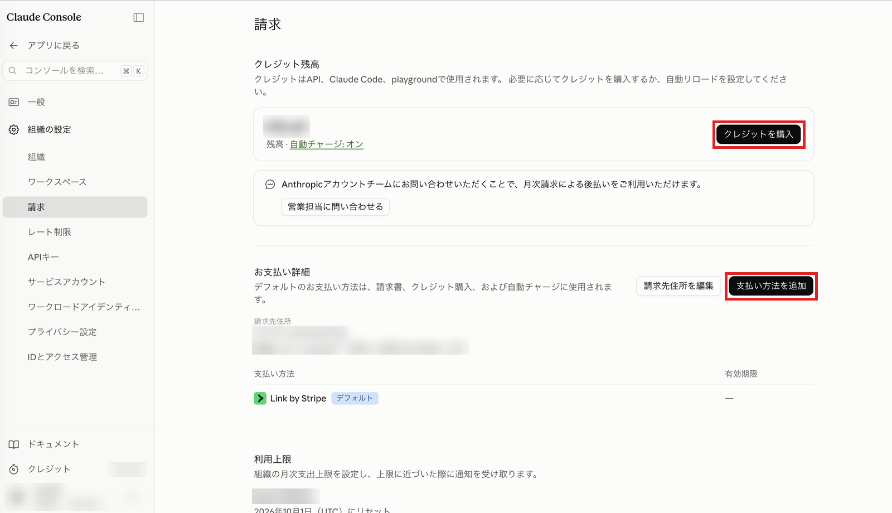

50代・非エンジニアのひろきが作った、リンクを開くだけで動くスターターキットです。
相棒を開くInstagram の中で開いている方は、右上の「…」→「外部ブラウザで開く」を押してから使ってください。






キーは他人に見せないでください。相棒の設定画面以外には貼らないでください。もし他人に知られたと思ったら、Console の「APIキー」一覧で右端の「⋮」からそのキーを削除し、新しく作り直せば大丈夫です。
設定ファイルは 3 つあります。見本は上の「見本を保存」から取れます。
各ファイルには、書き方の説明と記入例、あなたの記入欄が入っています。Mac の「テキストエディット」や Windows の「メモ帳」で開いて、記入欄を埋めて保存してください。読み込む手順は、⚙ → 「📄 ファイルを選ぶ」→ 3 つを選ぶ → 「保存して会話をはじめる」です。ファイルを使わず、画面の欄に直接書いても構いません。
Instagram の中で開いている方は、右上の「…」→「外部ブラウザで開く」を押してから使ってください。
うまくいかないとき、わからないことがあるときは、Instagram の DM か公式 LINE へ気軽に送ってください。